Hélio, uma figura divina e personificação primordial do sol, é descrito como sendo o próprio sol (deus-sol), guardião dos juramentos e senhor da visão. O deus-sol reside em seu salão no Palácio Dourado, localizado no Mundo Solar (Taiyokai). Visualmente, é representado como um homem belo, trajando vestes brancas e douradas, e coroado pela auréola brilhante do sol. Uma carruagem puxada por quatro corcéis alados é sua característica icônica.
A história revela que Hélio, originalmente o deus-sol supremo, foi destronado com o nascimento de Apolo, onde Zeus entregou o cargo para seu filho. No entanto, esse deus, outrora esquecido, retoma seu lugar ao usurpar o trono solar por direito, assumindo o título de deus-sol, responsável por guiar o sol em sua carruagem pelos céus. Sua presença é marcada por uma aura séria e imponente, como a de um imperador divino, emanando poder e orgulho, agindo de forma autoritária e ávida sobre seus oponentes.
A relação de Hélio com Atena é marcada por controvérsias. Consumido pelo orgulho e pelo poder, demonstra para a deusa da sabedoria uma certa desavença, principalmente por ser irmã de Apolo. O princípio das desavenças também se estende às Armaduras de Ouro, no qual possuem relações com sol, e sobre a posse das armaduras de Quilha, Coma Berenice e Auriga, as quais Atena reivindica como suas.
O exército de Hélio, denominado de Solares, é uma força hierárquica composta por uma base de soldados rasos, sete Solares do Eclipse, quatro Solares da Coroa, quatro Guerreiros das Estações e por fim, os Deuses do Sol. Ao lado do deus-sol, a autoridade máxima abaixo dos Deuses da Coroa Solar é o seu sumo sacerdote que assume o papel de Aurigário, encarregado de tarefas cruciais de vigilância constante do Palácio Dourado. Quando atividades intrusivas ocorrem nos limites do domínio do deus-sol, todos os solares convergem para lidar com a situação. Cabe ao Aurigário coordenar as forças desse exército.
Tesouros de Hélio
Os As Auroras de Hélio representam uma contraposição em relação aos Santos de Atena. Enquanto os Santos personificam heróis venerados por sua coragem e devoção à justiça, os Daemones surgem como uma facção diametralmente oposta, encarnando a selvageria e o caráter demoníaco da guerra. Cada integrante desse exército nefasto é movido por uma crueldade intrínseca, contrastando vividamente com a nobreza e justiça dos Santos.
Estes guerreiros demoníacos não apenas personificam a fúria de Ares, mas também manifestam uma fusão sombria de força bruta e magia demoníaca. Suas habilidades, imbuidas de poder infernal, revelam-se em ataques impiedosos e perversos. Junto aos deuses menores Deimos e Fobos, cada Daemone é uma encarnação da violência desenfreada desde a antiguidade liderados por Polemos da Fúria de Polemos e General do Batalhão de Guerra, Bellona da Fúria de Ênio e General do Batalhão da Conquista, Orco da Fúria de Limos e General do Batalhão da Fome, e por fim, Malephar da Fúria de Queres e General do Batalhão da Morte, revelando uma natureza sádica e destrutiva que acompanha o Deus da Guerra em suas batalhas.
O alicerce que une esses guerreiros infernais vai além da mera devoção pela batalha; eles são envolvidos por uma aura demoníaca que corrompe e contamina, disseminando o caos por onde passam. Essa aliança demoníaca representa uma ameaça real e iminente à ordem e harmonia que os Santos de Athena se esforçam para preservar, elevando os Daemones a uma posição sinistra no tabuleiro cósmico.
O Exército de Hélio
O Exército de Hélios representam uma contraposição em relação aos Santos de Atena. Enquanto os Santos personificam heróis venerados por sua coragem e devoção à justiça, os Daemones surgem como uma facção diametralmente oposta, encarnando a selvageria e o caráter demoníaco da guerra. Cada integrante desse exército nefasto é movido por uma crueldade intrínseca, contrastando vividamente com a nobreza e justiça dos Santos.
Estes guerreiros demoníacos não apenas personificam a fúria de Ares, mas também manifestam uma fusão sombria de força bruta e magia demoníaca. Suas habilidades, imbuidas de poder infernal, revelam-se em ataques impiedosos e perversos. Junto aos deuses menores Deimos e Fobos, cada Daemone é uma encarnação da violência desenfreada desde a antiguidade liderados por Polemos da Fúria de Polemos e General do Batalhão de Guerra, Bellona da Fúria de Ênio e General do Batalhão da Conquista, Orco da Fúria de Limos e General do Batalhão da Fome, e por fim, Malephar da Fúria de Queres e General do Batalhão da Morte, revelando uma natureza sádica e destrutiva que acompanha o Deus da Guerra em suas batalhas.
Deuses do Sol
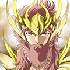
Hélio O Deus-SolHélio, O Deus-Sol é alicerce que une esses guerreiros infernais vai além da mera devoção pela batalha; eles são envolvidos por uma aura demoníaca que corrompe e contamina, disseminando o caos por onde passam. Essa aliança demoníaca representa uma ameaça real e iminente à ordem e harmonia que os Santos de Athena se esforçam para preservar, elevando os Daemones a uma posição sinistra no tabuleiro cósmico.
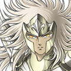
Eosphorus Estrela da ManhãEosphorus, a Estrela da Manhã o alicerce que une esses guerreiros infernais vai além da mera devoção pela batalha; eles são envolvidos por uma aura demoníaca que corrompe e contamina, disseminando o caos por onde passam. Essa aliança demoníaca representa uma ameaça real e iminente à ordem e harmonia que os Santos de Athena se esforçam para preservar, elevando os Daemones a uma posição sinistra no tabuleiro cósmico.
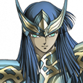
Hesperos Estrela da TardeHesperos, a Estrela da Tarde o alicerce que une esses guerreiros infernais vai além da mera devoção pela batalha; eles são envolvidos por uma aura demoníaca que corrompe e contamina, disseminando o caos por onde passam. Essa aliança demoníaca representa uma ameaça real e iminente à ordem e harmonia que os Santos de Athena se esforçam para preservar, elevando os Daemones a uma posição sinistra no tabuleiro cósmico.
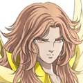
Deon AurigárioDeon, o Aurigário o alicerce que une esses guerreiros infernais vai além da mera devoção pela batalha; eles são envolvidos por uma aura demoníaca que corrompe e contamina, disseminando o caos por onde passam. Essa aliança demoníaca representa uma ameaça real e iminente à ordem e harmonia que os Santos de Athena se esforçam para preservar, elevando os Daemones a uma posição sinistra no tabuleiro cósmico.
Guerreiros das Estações
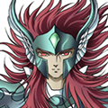
Eiar Solar PrimaverilEiar, Solar da Primavera é o Protetor do Salão de Primavera O alicerce que une esses guerreiros infernais vai além da mera devoção pela batalha; eles são envolvidos por uma aura demoníaca que corrompe e contamina, disseminando o caos por onde passam. Essa aliança demoníaca representa uma ameaça real e iminente à ordem e harmonia que os Santos de Athena se esforçam para preservar, elevando os Daemones a uma posição sinistra no tabuleiro cósmico.
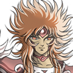
Aesta Solar EstivalAesta, Solar do Verão é o Protetor do Salão de Verão O alicerce que une esses guerreiros infernais vai além da mera devoção pela batalha; eles são envolvidos por uma aura demoníaca que corrompe e contamina, disseminando o caos por onde passam. Essa aliança demoníaca representa uma ameaça real e iminente à ordem e harmonia que os Santos de Athena se esforçam para preservar, elevando os Daemones a uma posição sinistra no tabuleiro cósmico.
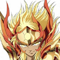
Phaethon Solar OutonalPhaeton, Solar do Outuno é o Protetor do Salão de Outono O alicerce que une esses guerreiros infernais vai além da mera devoção pela batalha; eles são envolvidos por uma aura demoníaca que corrompe e contamina, disseminando o caos por onde passam. Essa aliança demoníaca representa uma ameaça real e iminente à ordem e harmonia que os Santos de Athena se esforçam para preservar, elevando os Daemones a uma posição sinistra no tabuleiro cósmico.
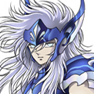
Hiems Solar InvernalHiems, o Solar do Inverno é o Protetor do Salão de Inverno O alicerce que une esses guerreiros infernais vai além da mera devoção pela batalha; eles são envolvidos por uma aura demoníaca que corrompe e contamina, disseminando o caos por onde passam. Essa aliança demoníaca representa uma ameaça real e iminente à ordem e harmonia que os Santos de Athena se esforçam para preservar, elevando os Daemones a uma posição sinistra no tabuleiro cósmico.
Solares da Coroa
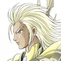
Makar Solar de AethonMakar, Solar de Aethon, O Ardente é o Protetor do Salão de Primavera O alicerce que une esses guerreiros infernais vai além da mera devoção pela batalha; eles são envolvidos por uma aura demoníaca que corrompe e contamina, disseminando o caos por onde passam. Essa aliança demoníaca representa uma ameaça real e iminente à ordem e harmonia que os Santos de Athena se esforçam para preservar, elevando os Daemones a uma posição sinistra no tabuleiro cósmico.
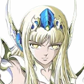
Faetusa Solar de EousFaetusa, Solar de Eous, O Amanhecer é o Protetor do Salão de Verão O alicerce que une esses guerreiros infernais vai além da mera devoção pela batalha; eles são envolvidos por uma aura demoníaca que corrompe e contamina, disseminando o caos por onde passam. Essa aliança demoníaca representa uma ameaça real e iminente à ordem e harmonia que os Santos de Athena se esforçam para preservar, elevando os Daemones a uma posição sinistra no tabuleiro cósmico.
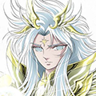
Kerfakos Solar de PhlegonKerfakos, Solar de Phlegon, A Brasa é o Protetor do Salão de Outono O alicerce que une esses guerreiros infernais vai além da mera devoção pela batalha; eles são envolvidos por uma aura demoníaca que corrompe e contamina, disseminando o caos por onde passam. Essa aliança demoníaca representa uma ameaça real e iminente à ordem e harmonia que os Santos de Athena se esforçam para preservar, elevando os Daemones a uma posição sinistra no tabuleiro cósmico.
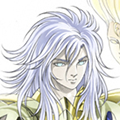
Aloios Solar de PyroisAloios, Solar de Pyrois, O Ígneo é o Protetor do Salão de Inverno O alicerce que une esses guerreiros infernais vai além da mera devoção pela batalha; eles são envolvidos por uma aura demoníaca que corrompe e contamina, disseminando o caos por onde passam. Essa aliança demoníaca representa uma ameaça real e iminente à ordem e harmonia que os Santos de Athena se esforçam para preservar, elevando os Daemones a uma posição sinistra no tabuleiro cósmico.
Solares do Eclipse
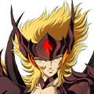
Ialysos Solar de YilbeganIalysos, o Solar de Yilbegan O alicerce que une esses guerreiros infernais vai além da mera devoção pela batalha; eles são envolvidos por uma aura demoníaca que corrompe e contamina, disseminando o caos por onde passam. Essa aliança demoníaca representa uma ameaça real e iminente à ordem e harmonia que os Santos de Athena se esforçam para preservar, elevando os Daemones a uma posição sinistra no tabuleiro cósmico.
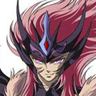
Ieron Solar de VarcolacIeron, o Solar de Varcolac O alicerce que une esses guerreiros infernais vai além da mera devoção pela batalha; eles são envolvidos por uma aura demoníaca que corrompe e contamina, disseminando o caos por onde passam. Essa aliança demoníaca representa uma ameaça real e iminente à ordem e harmonia que os Santos de Athena se esforçam para preservar, elevando os Daemones a uma posição sinistra no tabuleiro cósmico.
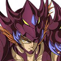
Cetho Solar de RahuCetho, o Solar de Rahu O alicerce que une esses guerreiros infernais vai além da mera devoção pela batalha; eles são envolvidos por uma aura demoníaca que corrompe e contamina, disseminando o caos por onde passam. Essa aliança demoníaca representa uma ameaça real e iminente à ordem e harmonia que os Santos de Athena se esforçam para preservar, elevando os Daemones a uma posição sinistra no tabuleiro cósmico.
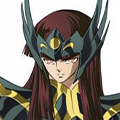
Amum Solar de ApófisAmum, o Solar de Apófis O alicerce que une esses guerreiros infernais vai além da mera devoção pela batalha; eles são envolvidos por uma aura demoníaca que corrompe e contamina, disseminando o caos por onde passam. Essa aliança demoníaca representa uma ameaça real e iminente à ordem e harmonia que os Santos de Athena se esforçam para preservar, elevando os Daemones a uma posição sinistra no tabuleiro cósmico.
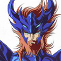
Ashur Solar de SebittiAshur, o Solar de Sebitti O alicerce que une esses guerreiros infernais vai além da mera devoção pela batalha; eles são envolvidos por uma aura demoníaca que corrompe e contamina, disseminando o caos por onde passam. Essa aliança demoníaca representa uma ameaça real e iminente à ordem e harmonia que os Santos de Athena se esforçam para preservar, elevando os Daemones a uma posição sinistra no tabuleiro cósmico.
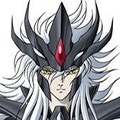
Lykas Solar de TiangouLykas, o Solar de Tiangou O alicerce que une esses guerreiros infernais vai além da mera devoção pela batalha; eles são envolvidos por uma aura demoníaca que corrompe e contamina, disseminando o caos por onde passam. Essa aliança demoníaca representa uma ameaça real e iminente à ordem e harmonia que os Santos de Athena se esforçam para preservar, elevando os Daemones a uma posição sinistra no tabuleiro cósmico.
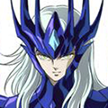
Jaguar Solar de TzitzimimeJaguar, o Solar de Tzitzimime O alicerce que une esses guerreiros infernais vai além da mera devoção pela batalha; eles são envolvidos por uma aura demoníaca que corrompe e contamina, disseminando o caos por onde passam. Essa aliança demoníaca representa uma ameaça real e iminente à ordem e harmonia que os Santos de Athena se esforçam para preservar, elevando os Daemones a uma posição sinistra no tabuleiro cósmico.
Soldados Rasos
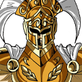
Soldados RasosSoldados Rasos O alicerce que une esses guerreiros infernais vai além da mera devoção pela batalha; eles são envolvidos por uma aura demoníaca que corrompe e contamina, disseminando o caos por onde passam. Essa aliança demoníaca representa uma ameaça real e iminente à ordem e harmonia que os Santos de Athena se esforçam para preservar, elevando os Daemones a uma posição sinistra no tabuleiro cósmico.
O Mundo Solar
Os Nobrezas de Hélio representam uma contraposição em relação aos Santos de Atena. Enquanto os Santos personificam heróis venerados por sua coragem e devoção à justiça, os Daemones surgem como uma facção diametralmente oposta, encarnando a selvageria e o caráter demoníaco da guerra. Cada integrante desse exército nefasto é movido por uma crueldade intrínseca, contrastando vividamente com a nobreza e justiça dos Santos.
Estes guerreiros demoníacos não apenas personificam a fúria de Ares, mas também manifestam uma fusão sombria de força bruta e magia demoníaca. Suas habilidades, imbuidas de poder infernal, revelam-se em ataques impiedosos e perversos. Junto aos deuses menores Deimos e Fobos, cada Daemone é uma encarnação da violência desenfreada desde a antiguidade liderados por Polemos da Fúria de Polemos e General do Batalhão de Guerra, Bellona da Fúria de Ênio e General do Batalhão da Conquista, Orco da Fúria de Limos e General do Batalhão da Fome, e por fim, Malephar da Fúria de Queres e General do Batalhão da Morte, revelando uma natureza sádica e destrutiva que acompanha o Deus da Guerra em suas batalhas.
O alicerce que une esses guerreiros infernais vai além da mera devoção pela batalha; eles são envolvidos por uma aura demoníaca que corrompe e contamina, disseminando o caos por onde passam. Essa aliança demoníaca representa uma ameaça real e iminente à ordem e harmonia que os Santos de Athena se esforçam para preservar, elevando os Daemones a uma posição sinistra no tabuleiro cósmico.
Locais
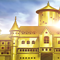
Palácio DouradoO Palácio Dourado O alicerce que une esses guerreiros infernais vai além da mera devoção pela batalha; eles são envolvidos por uma aura demoníaca que corrompe e contamina, disseminando o caos por onde passam. Essa aliança demoníaca representa uma ameaça real e iminente à ordem e harmonia que os Santos de Athena se esforçam para preservar, elevando os Daemones a uma posição sinistra no tabuleiro cósmico.
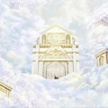
Grande Salaão da Chama PrimordialO Grande Salão da Chama Primordial O alicerce que une esses guerreiros infernais vai além da mera devoção pela batalha; eles são envolvidos por uma aura demoníaca que corrompe e contamina, disseminando o caos por onde passam. Essa aliança demoníaca representa uma ameaça real e iminente à ordem e harmonia que os Santos de Athena se esforçam para preservar, elevando os Daemones a uma posição sinistra no tabuleiro cósmico.
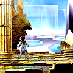
Dimensão SolarA Dimensão Solar O alicerce que une esses guerreiros infernais vai além da mera devoção pela batalha; eles são envolvidos por uma aura demoníaca que corrompe e contamina, disseminando o caos por onde passam. Essa aliança demoníaca representa uma ameaça real e iminente à ordem e harmonia que os Santos de Athena se esforçam para preservar, elevando os Daemones a uma posição sinistra no tabuleiro cósmico.
Mar PoenteO Mar Poente O alicerce que une esses guerreiros infernais vai além da mera devoção pela batalha; eles são envolvidos por uma aura demoníaca que corrompe e contamina, disseminando o caos por onde passam. Essa aliança demoníaca representa uma ameaça real e iminente à ordem e harmonia que os Santos de Athena se esforçam para preservar, elevando os Daemones a uma posição sinistra no tabuleiro cósmico.
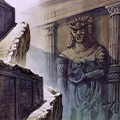
Muro do EsquecimentoO Muro do Esquecimento O alicerce que une esses guerreiros infernais vai além da mera devoção pela batalha; eles são envolvidos por uma aura demoníaca que corrompe e contamina, disseminando o caos por onde passam. Essa aliança demoníaca representa uma ameaça real e iminente à ordem e harmonia que os Santos de Athena se esforçam para preservar, elevando os Daemones a uma posição sinistra no tabuleiro cósmico.
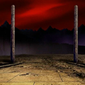
Prisão EclipseO Prisão Eclipse O alicerce que une esses guerreiros infernais vai além da mera devoção pela batalha; eles são envolvidos por uma aura demoníaca que corrompe e contamina, disseminando o caos por onde passam. Essa aliança demoníaca representa uma ameaça real e iminente à ordem e harmonia que os Santos de Athena se esforçam para preservar, elevando os Daemones a uma posição sinistra no tabuleiro cósmico.
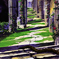
Jardim da PrimaveraO Jardim da Primavera O alicerce que une esses guerreiros infernais vai além da mera devoção pela batalha; eles são envolvidos por uma aura demoníaca que corrompe e contamina, disseminando o caos por onde passam. Essa aliança demoníaca representa uma ameaça real e iminente à ordem e harmonia que os Santos de Athena se esforçam para preservar, elevando os Daemones a uma posição sinistra no tabuleiro cósmico.
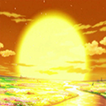
Jardim de VerãoO Jardim de Verão O alicerce que une esses guerreiros infernais vai além da mera devoção pela batalha; eles são envolvidos por uma aura demoníaca que corrompe e contamina, disseminando o caos por onde passam. Essa aliança demoníaca representa uma ameaça real e iminente à ordem e harmonia que os Santos de Athena se esforçam para preservar, elevando os Daemones a uma posição sinistra no tabuleiro cósmico.
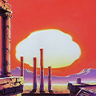
Jardim de OutonoO Jardim de Outono O alicerce que une esses guerreiros infernais vai além da mera devoção pela batalha; eles são envolvidos por uma aura demoníaca que corrompe e contamina, disseminando o caos por onde passam. Essa aliança demoníaca representa uma ameaça real e iminente à ordem e harmonia que os Santos de Athena se esforçam para preservar, elevando os Daemones a uma posição sinistra no tabuleiro cósmico.
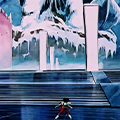
Jardim de InvernoO Jardim de Inverno O alicerce que une esses guerreiros infernais vai além da mera devoção pela batalha; eles são envolvidos por uma aura demoníaca que corrompe e contamina, disseminando o caos por onde passam. Essa aliança demoníaca representa uma ameaça real e iminente à ordem e harmonia que os Santos de Athena se esforçam para preservar, elevando os Daemones a uma posição sinistra no tabuleiro cósmico.
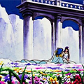
Campo das HespéridesOs Campo das Hespérides O alicerce que une esses guerreiros infernais vai além da mera devoção pela batalha; eles são envolvidos por uma aura demoníaca que corrompe e contamina, disseminando o caos por onde passam. Essa aliança demoníaca representa uma ameaça real e iminente à ordem e harmonia que os Santos de Athena se esforçam para preservar, elevando os Daemones a uma posição sinistra no tabuleiro cósmico.
Ruínas do Antigo SolAs Ruínas do Antigo Sol O alicerce que une esses guerreiros infernais vai além da mera devoção pela batalha; eles são envolvidos por uma aura demoníaca que corrompe e contamina, disseminando o caos por onde passam. Essa aliança demoníaca representa uma ameaça real e iminente à ordem e harmonia que os Santos de Athena se esforçam para preservar, elevando os Daemones a uma posição sinistra no tabuleiro cósmico.